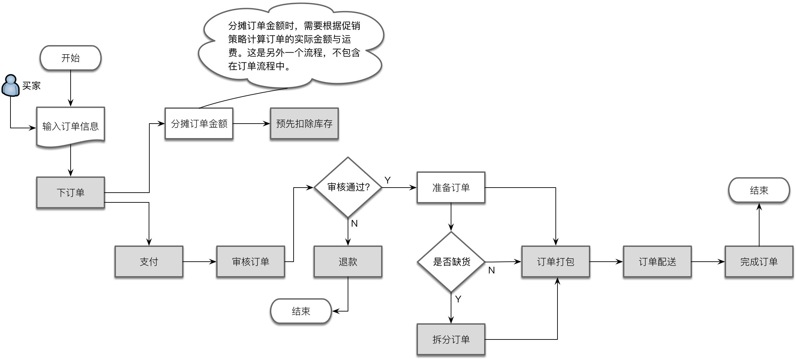
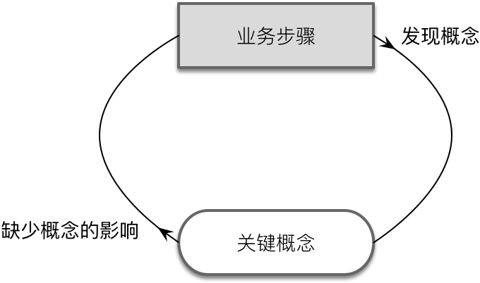
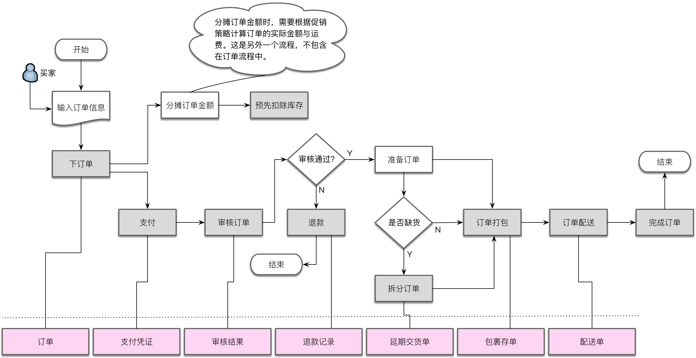
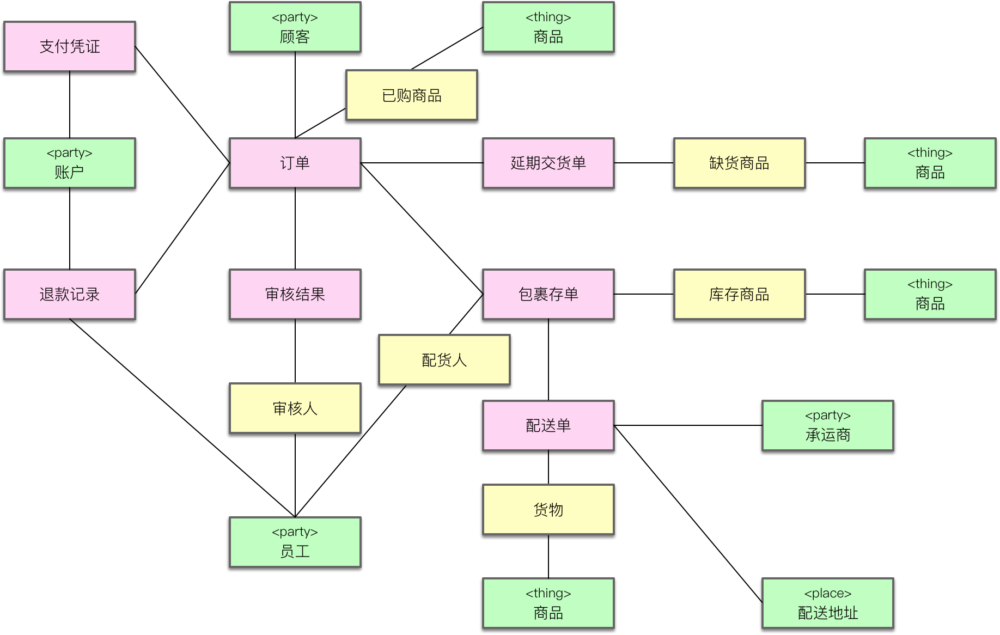

- 001 「战略篇」访谈 DDD 和微服务是什么关系？.md.html
- 002 「战略篇」开篇词：领域驱动设计，重焕青春的设计经典.md.html
- 003 领域驱动设计概览.md.html
- 004 深入分析软件的复杂度.md.html
- 005 控制软件复杂度的原则.md.html
- 006 领域驱动设计对软件复杂度的应对（上）.md.html
- 007 领域驱动设计对软件复杂度的应对（下）.md.html
- 008 软件开发团队的沟通与协作.md.html
- 009 运用领域场景分析提炼领域知识（上）.md.html
- 010 运用领域场景分析提炼领域知识（下）.md.html
- 011 建立统一语言.md.html
- 012 理解限界上下文.md.html
- 013 限界上下文的控制力（上）.md.html
- 014 限界上下文的控制力（下）.md.html
- 015 识别限界上下文（上）.md.html
- 016 识别限界上下文（下）.md.html
- 017 理解上下文映射.md.html
- 018 上下文映射的团队协作模式.md.html
- 019 上下文映射的通信集成模式.md.html
- 020 辨别限界上下文的协作关系（上）.md.html
- 021 辨别限界上下文的协作关系（下）.md.html
- 022 认识分层架构.md.html
- 023 分层架构的演化.md.html
- 024 领域驱动架构的演进.md.html
- 025 案例 层次的职责与协作关系（图文篇）.md.html
- 026 限界上下文与架构.md.html
- 027 限界上下文对架构的影响.md.html
- 028 领域驱动设计的代码模型.md.html
- 029 代码模型的架构决策.md.html
- 030 实践 先启阶段的需求分析.md.html
- 031 实践 先启阶段的领域场景分析（上）.md.html
- 032 实践 先启阶段的领域场景分析（下）.md.html
- 033 实践 识别限界上下文.md.html
- 034 实践 确定限界上下文的协作关系.md.html
- 035 实践 EAS 的整体架构.md.html
- 036 「战术篇」访谈：DDD 能帮开发团队提高设计水平吗？.md.html
- 037 「战术篇」开篇词：领域驱动设计的不确定性.md.html
- 038 什么是模型.md.html
- 039 数据分析模型.md.html
- 040 数据设计模型.md.html
- 041 数据模型与对象模型.md.html
- 042 数据实现模型.md.html
- 043 案例 培训管理系统.md.html
- 044 服务资源模型.md.html
- 045 服务行为模型.md.html
- 046 服务设计模型.md.html
- 047 领域模型驱动设计.md.html
- 048 领域实现模型.md.html
- 049 理解领域模型.md.html
- 050 领域模型与结构范式.md.html
- 051 领域模型与对象范式（上）.md.html
- 052 领域模型与对象范式（中）.md.html
- 053 领域模型与对象范式（下）.md.html
- 054 领域模型与函数范式.md.html
- 055 领域驱动分层架构与对象模型.md.html
- 056 统一语言与领域分析模型.md.html
- 057 精炼领域分析模型.md.html
- 058 彩色 UML 与彩色建模.md.html
- 059 四色建模法.md.html
- 060 案例 订单核心流程的四色建模.md.html
- 061 事件风暴与业务全景探索.md.html
- 062 事件风暴与领域分析建模.md.html
- 063 案例 订单核心流程的事件风暴.md.html
- 064 表达领域设计模型.md.html
- 065 实体.md.html
- 066 值对象.md.html
- 067 对象图与聚合.md.html
- 068 聚合设计原则.md.html
- 069 聚合之间的关系.md.html
- 070 聚合的设计过程.md.html
- 071 案例 培训领域模型的聚合设计.md.html
- 072 领域模型对象的生命周期-工厂.md.html
- 073 领域模型对象的生命周期-资源库.md.html
- 074 领域服务.md.html
- 075 案例 领域设计模型的价值.md.html
- 076 应用服务.md.html
- 077 场景的设计驱动力.md.html
- 078 案例 薪资管理系统的场景驱动设计.md.html
- 079 场景驱动设计与 DCI 模式.md.html
- 080 领域事件.md.html
- 081 发布者—订阅者模式.md.html
- 082 事件溯源模式.md.html
- 083 测试优先的领域实现建模.md.html
- 084 深入理解简单设计.md.html
- 085 案例 薪资管理系统的测试驱动开发（上）.md.html
- 086 案例 薪资管理系统的测试驱动开发（下）.md.html
- 087 对象关系映射（上）.md.html
- 088 对象关系映射（下）.md.html
- 089 领域模型与数据模型.md.html
- 090 领域驱动设计对持久化的影响.md.html
- 091 领域驱动设计体系.md.html
- 092 子领域与限界上下文.md.html
- 093 限界上下文的边界与协作.md.html
- 094 限界上下文之间的分布式通信.md.html
- 095 命令查询职责分离.md.html
- 096 分布式柔性事务.md.html
- 097 设计概念的统一语言.md.html
- 098 模型对象.md.html
- 099 领域驱动设计参考过程模型.md.html
- 100 领域驱动设计的精髓.md.html
- 101 实践 员工上下文的领域建模.md.html
- 102 实践 考勤上下文的领域建模.md.html
- 103 实践 项目上下文的领域建模.md.html
- 104 实践 培训上下文的业务需求.md.html
- 105 实践 培训上下文的领域分析建模.md.html
- 106 实践 培训上下文的领域设计建模.md.html
- 107 实践 培训上下文的领域实现建模.md.html
- 108 实践 EAS 系统的代码模型.md.html
- 109 后记：如何学习领域驱动设计.md.html
060 案例 订单核心流程的四色建模
我们以电商系统的订单流程为例，演练一下通过四色建模法帮助我们获得领域分析模型的过程。基于前面对四色建模法的介绍，要识别时标型对象，需要先梳理出业务流程，尤其是核心的业务流程。电商系统的订单流程描述了从订单产生到交易结束的整个过程，覆盖了电子商城（E-Mall）、仓库管理（WMS）与物流管理系统（TMS）等多个系统之间的业务流转。订单流程通常分为正向流程与逆向流程。从生成订单开始，由买家发起购物付款—仓库发货（不针对虚拟商品）—用户收货为正向流程；若买家对所购商品不满意，则由买家发起退货申请—仓库收货—退款处理流程为逆向流程。为简便起见，本案例仅考虑正向订单流程，如下图所示：

遵循四色建模法对业务流程进行梳理时，重要的不仅仅是保证业务流程的完整性，同时还需要站在运营者和管理者的角度，判断哪些流程步骤会影响到运营与管理。对于电商系统来说，订单自身的每次状态变化都与买家的用户体验息息相关，如果缺少订单，就会对商城的运营管理产生直接影响。支付行为与账务有关，如果缺少支付信息，就无法完成账目的对账，对商城的财务审计与财务收支统计产生影响。在追踪订单状态的过程中，因为缺货引起的订单拆分，订单打包与商品配送等过程，与买家消费状况、库存管理和物流跟踪有着直接联系，直接影响买家购物。这正是图中一部分步骤被标记为灰色的核心步骤的缘由。
我一再强调，领域分析建模工作需得团队与领域专家进行充分交流。倘若建模分析师无法准确地识别这些核心步骤，就说明他缺乏管理和运营的视角，不具备模型分析必须的领域知识，这正是领域专家乃至企业管理者介入建模环节的时机。领域分析建模的建模原则之一，就是一定要与理解业务的领域专家共同建模。
一旦识别出业务流程的核心步骤，接下来就应该寻找：这些核心步骤会留下值得记录的“足迹”吗？倘若缺乏该记录，是否会对运营与管理产生影响？结合时标型对象的特征，我们要去发现那些隐藏在业务流程背后的领域概念，它们具有：
- “事实”的不可变更性：它是过去某个时刻或时段发生的事实
- “责任”的可追溯性：它记录的数据是决策者和管理者关注的信息
在四色建模过程中，我们遵循时标型对象的特征来不断发起和领域专家之间的问答，当然也可以是设计者自己的自问自答。提问的模式遵循：
- 针对核心步骤
<S>，是否需要记录该步骤行为的结果<R>？ - 如果缺少了结果
<R>，会否对运营与管理产生影响？
第一个问题是正向的，带我们思考，以驱动出可能隐藏在业务流程背后的关键概念；第二个问题是反向的，用以验证挖掘出来的这个业务概念，是否真的属于领域分析模型中的核心概念？这一正反两个方向的分析驱动力如下图所示：

以“支付”业务步骤为例，当买家对订单进行支付时，需要记录支付的结果吗？显然需要！那么这个结果应该用什么领域概念来描述它？是“支付记录”、“网银记录”、“交易记录”还是“支付凭证”？如果不能确定概念的名称，就需要结合领域知识来梳理和辨别，然后将其作为统一语言的候选。假设我们确定为“支付凭证”，然后再反过来思考，如果没有支付凭证，会影响到电商业务的运营与管理吗？答案是肯定的。例如考虑买家退货场景：如果缺少支付凭证，将无法判断该买家是否为订单成功进行了支付，也不知道支付发生的时间，金额以及支付方式。不知道这些信息，就无法满足退货退款的需求。当电商需要与卖家进行结算，又或者需要统计每日或每月的营收情况时，缺少支付凭证记录的信息，这些运营管理行为也将无法完成。
经过这样的双重判断，既帮助我们挖掘出隐藏的领域分析模型概念，又能够对该概念进行正确性验证，使得我们的领域分析模型在变得越来越丰富的同时，还能保证模型的正确性。而概念名称的确认，也是维护统一语言的良机。通过这样的分析与思考过程，我们由前述流程可获得如下标记为粉红色的时标型对象：

在识别时标型对象时，针对“下订单”核心步骤可以获得“订单”对象。这个对象是时标型对象吗？订单记录的数据与运营管理直接有关，它也确实是关键行为在确定时间产生的结果，订单与代表物的商品、代表人的客户具有关联关系，这些都是时标型对象的特征。唯一不同之处在于订单并非不可变更的“事实”，随着一些关键行为的产生，订单状态会随之发生变更，例如随着“订单配送”行为的发生，同一个订单的状态就从“Granted”变更为“Shipped”。
如果要绝对地追求时标型对象的不可变性，或许订单不应该归入到时标型对象中。但我认为，在识别出订单对象后，继续纠结于它是时标型对象还是 PPT 对象并无意义。正如我在前面所说：“在领域分析建模过程中，进行分析建模的“初心”并非要识别出时标型对象，而是识别能够完整表达领域知识的领域概念！”因此，在运用四色建模法时，时刻谨记我们建模的目标是寻找正确的领域对象，不要受到领域对象类型的干扰。当建模过程从分析活动进入到设计活动，四色建模法的这四种对象类型都将标记为领域驱动设计中的设计要素，即确定这些对象到底是实体（Entity），还是值对象（Value Object）。
当然，理解时标型对象的特征是非常有必要的，掌握这些知识有助于建模人员发现时标型对象。还是以订单为例，虽然订单状态会发生变化，但它的的确确是过去某个时间产生的对管理和运营产生影响的数据记录。若将其视为时标型对象，则说明对“责任的追溯”要高于“事实的不可变更”。此外，在理解所谓的“不变性”时，也不能太狭隘，而应理解为时标型对象关键属性的不可变。所谓“关键属性”，其实就是影响到管理与运营的属性，如订单的订单项、总金额、配送地址等。许多电商网站都不允许买家在提交订单之后，对订单进行修改。若需修改订单，只能是在取消订单之后，再次提交另一份订单。
在识别出时标型对象之后，还需要尽可能确定它们彼此之间的关系。在下图所示的时标型对象中，延期交货单、包裹存单与订单之间存在关联关系，这是因为管理者需要了解这些时标型对象来自于哪一个订单，以便于追溯；而配送单与订单却没有直接关联，虽然它仍然需要获得订单信息来满足追溯的需求，但这个信息可以直接从包裹存单中获得。事实上，在物流配送领域，确实无需考虑购买环节产生的订单信息。
一旦确定了时标型对象，就可以识别代表“参与方（Party）/地点（Place）/物品（Thing）”的 PPT 对象来丰富这个骨干的基本模型。如前所述，时标型对象不可能是孤立的，也不可能凭空产生，一定会与 PPT 对象产生关系。当时标型对象需要满足运营和管理的需要而被追溯时，可能就需要 PPT 对象提供信息。寻找 PPT 对象可以参考业务需求描述中的名词概念，也可以看看产生时标型对象的行为究竟会与什么对象有关。
如果 PPT 对象作为参与方，意味着该对象是业务流程中核心步骤的参与方，只要该参与方的信息将用于追溯时标型对象，就需要建立该对象与时标型对象之间的关系。例如，当客户下订单时，会有账户作为参与方执行支付，则支付凭证就会与账户存在关联关系；员工作为参与者执行审核订单、退款和订单打包行为，因此退款记录、审核结果和包裹存单都将与“员工”实体存在关联。
对于代表地点的 PPT 对象，相对比较特殊，只有那些明确需要地点信息的时标型对象才需要它，例如配送单就需要“配送地址”对象，否则就无法知道配送的目的地。当然，不要将地点与地址混为一谈。例如销售领域中的销售渠道、区域，物流领域中的路线、站点都是代表地点的 PPT 对象。
代表“物品”的 PPT 对象往往会作为业务流程中核心步骤的被操作对象，并为时标型对象提供必要的信息，以利于信息的追溯。例如订单需要“商品”信息，否则无法说明买家到底购买了哪些商品；延期交货单需要“商品”信息，这样才能标记哪些商品缺货；包裹存单需要“商品”信息，可以为库存打包提供正确的商品参考信息；配送单也需要“商品”信息，只有这样才能对整个配送过程进行监管。同时，配送单还需要“承运商”的信息，以便于对配送单进行跟踪，明确配送的责任方。PPT 对象在四色建模法中用绿色标签来表示，因而可以得到如下的订单分析模型：
在确定 PPT 对象与时标型对象之间的关系时，可能出现同一个 PPT 对象与多个时标型对象之间存在关联的情况。这恰好是角色（Role）对象出现的时机。例如，上述模型就反复出现了多个“商品”对象。我们可否将这些“商品”概念合并为一个呢？仔细分析，这些商品对象虽然名称相同，但对于不同的时标型对象却体现了不同的业务关系，实际代表不同的领域概念。例如订单关联的商品，代表了一种购买关系，此时的商品其实是已购商品；延期交货单中的商品表示目前缺货，代表缺货商品；包裹存单的商品属于库存；配送单的商品其实是物流运输过程中的货物。
当时标型对象与代表人或组织的 PPT 对象存在关联关系时，引入角色对象更为常见。事实上，这个角色对象才是触发业务行为产生时标型对象的真正发起人。例如，当员工与审核结果产生关系时，需要由“审核人”这个角色来执行审核订单操作；当员工与包裹存单产生关系时，由“配货人”完成订单打包操作。
角色对象用黄色标签表示，于是模型演进为：

角色对象其实体现了相同的 PPT 对象在不同上下文中代表的不同业务含义，因此可以结合战略设计的限界上下文来理解。例如已购商品属于购买上下文，库存商品属于库存上下文，货物属于物流上下文。这也正是限界上下文的价值，即用于维护上下文边界内的模型统一。
在建模过程中，我们可以将战略设计和战术设计融合起来。如果在先启阶段已经初步识别了限界上下文，那么在针对领域进行建模时，可以将限界上下文引入到模型中，作为领域模型的边界；当我们在建模时，倘若发现存在领域概念混乱或重复的情况，例如订单建模过程中针对员工和商品引入的角色对象，又可以反过来帮助我们检测之前的限界上下文识别是否存在问题，并及时进行改进，从而形成我在《领域驱动设计实践（战略篇）》第 01 课《领域驱动设计概览》中提到的“演进的领域驱动设计过程”，即：
战略设计会控制和分解战术设计的边界与粒度，战术设计则以实证角度验证领域模型的有效性、完整性与一致性，进而以演进的方式对之前的战略设计阶段进行迭代，从而形成一种螺旋式上升的迭代设计过程。
最后是描述对象。如前所述，描述对象是对 PPT 对象的描述。在 PPT 对象已经被识别出来的前提下，判断这些 PPT 对象是否还需要做进一步的说明。显然，如果要吸引顾客购买商品，需要对商品信息做进一步补充和说明；同理，顾客和承运商也需要添加描述：
四色建模法的核心是时标型对象，它们也是领域分析模型中最有价值的领域概念。在四色建模过程中，时刻牢记时标型对象的特征，从运营和管理角度去理解是其根本。通俗地说，四色建模法就是要围绕着“钱”进行模型识别。时标型对象会直接或间接影响到企业的收入和支出。正如徐昊所说，四色建模法源自“财务是业务通用语言”的领域风暴。每个时标型对象本质上都是凭证，包括原始凭证和应收凭证等，这些都是财务的业务语言。
不管领域怎么变化，企业的运营模式和对凭证（或者说票据）的关注基本上是不变的。若能抓住时标型对象的这些特征，就可以让领域建模不再跟着感觉走，而是基于运营角度建立领域分析模型的骨架，剩下的就是逐渐填充和丰富的过程。显然，这是一种相对可以落地的领域分析建模方法。
分享交流
我们为本课程付费读者创建了微信交流群，以方便更有针对性地讨论课程相关问题。入群方式请到第 6-1 课末尾添加小编的微信号，并注明「DDD」。
阅读文章过程中有任何疑问随时可以跟其他小伙伴讨论，或者直接向作者提问（作者看到后抽空回复）。你的分享不仅帮助他人，更会提升自己。